Sometimes, thoughts might get heavy. Yuko found a trick to offload her overwhelming thoughts to some magical elephants inside her mind.
Imagined in collaboration with AI, frame-by-frame digital watercolor histology of a contemplating racing brain.

An animated short film directed by Youyang Yu, based on Yuko Taniguchi's poem 'Inside My Eyes', inspired by her long term efforts in collaboration with psychiatrist Dr. Kathryn Cullen exploring the impact of creative practices on the wellbeing of adolescents facing pressing mental health challenges.
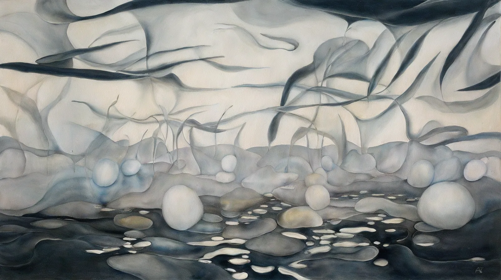
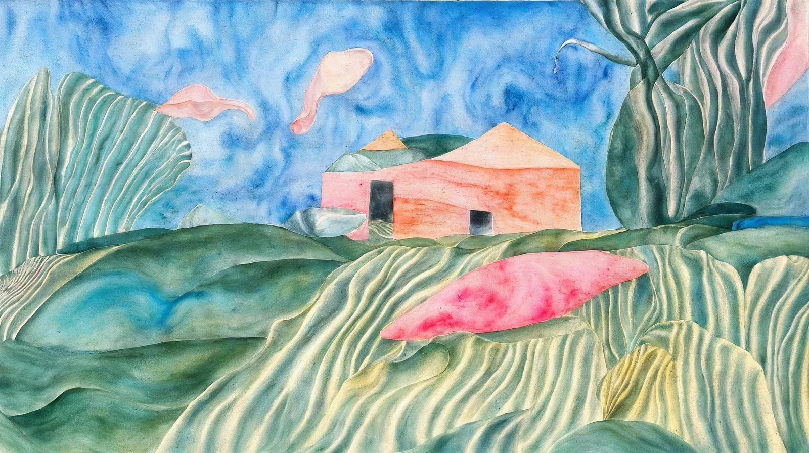
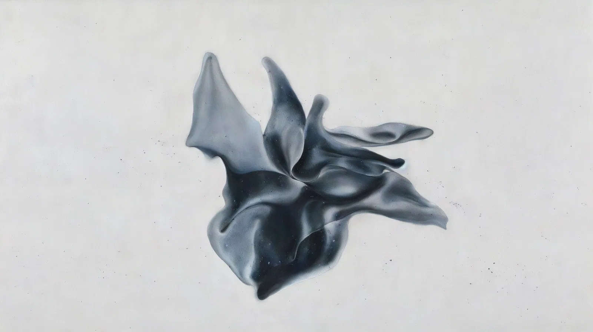
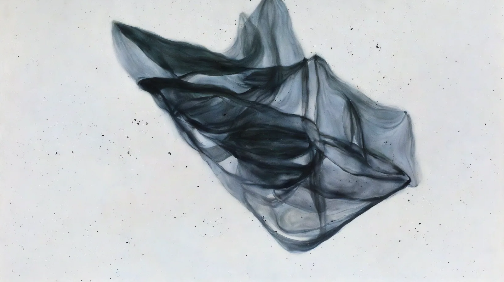
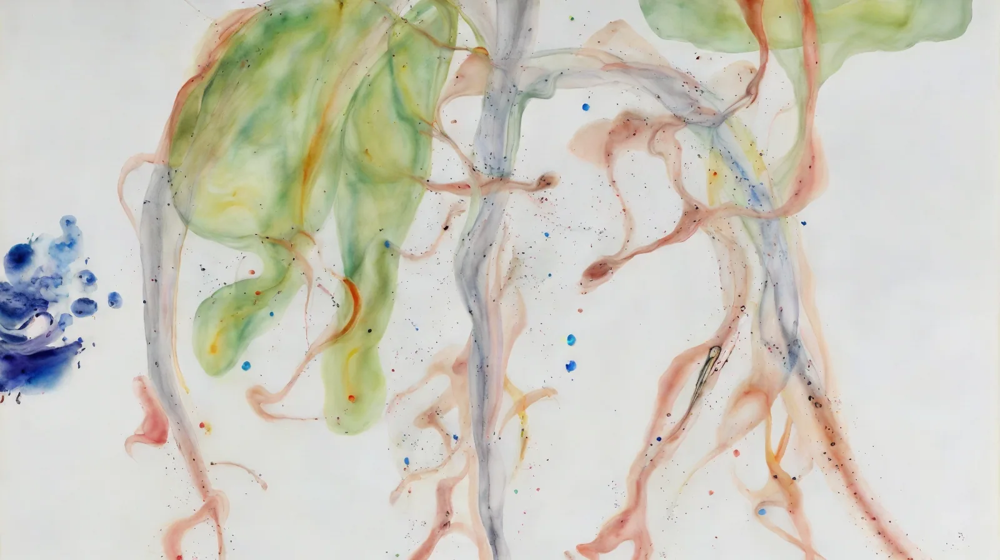
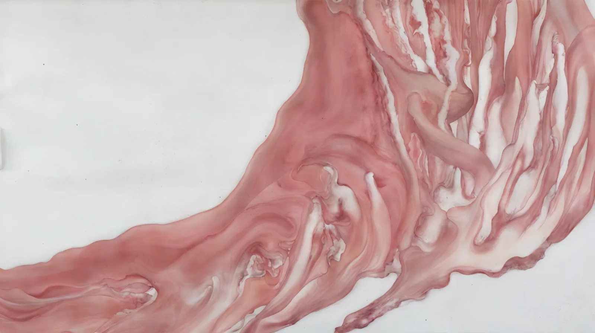
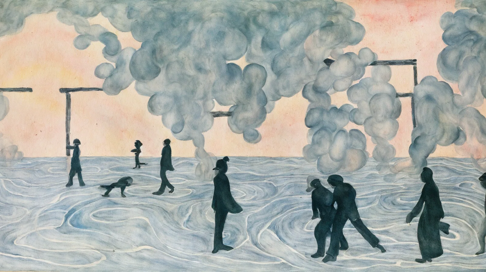
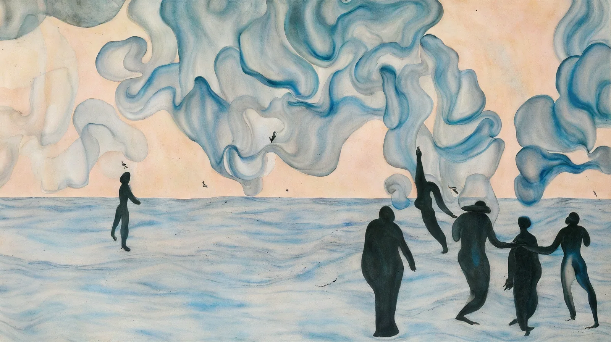
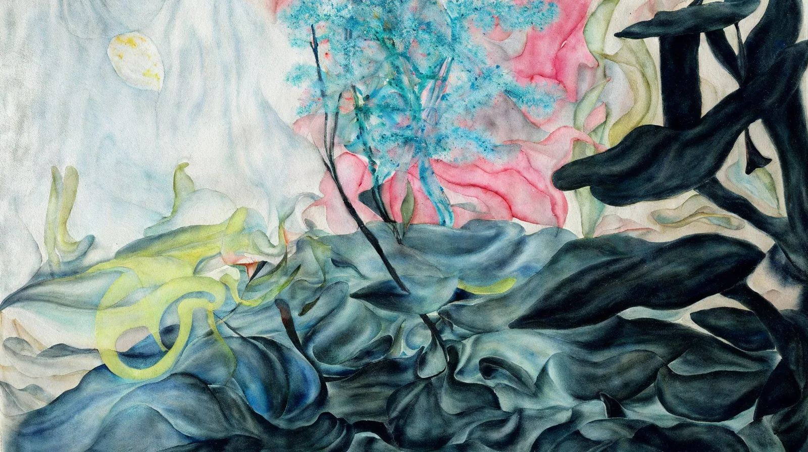
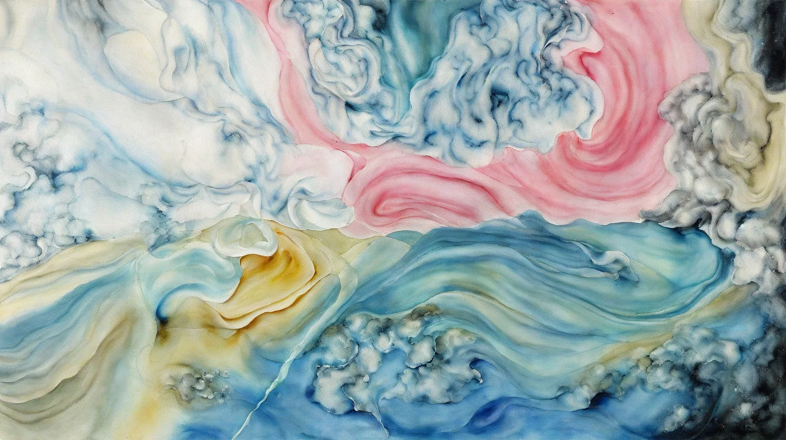
I incorporated AI image processing in the making of the film.
Primarily I used stable diffusion for quick visual concepts of the background designs, runway inpainting model for greenscreen, to separate the elephants and butterflies from found footage.
During production, I used ebsynth for quick rotoscoping of the elephant's silhouette, and after digitally sketch drawn some frame-by-frame animation, then img2img in stable diffusion to batch render the final painted / ink/ watercolor/ biogenic histology look which is traditionally very time-consuming and expensive to create even just for one image, let alone to keep shapes in consistency from sequential frames due to these analog medium's freeform physical nature.
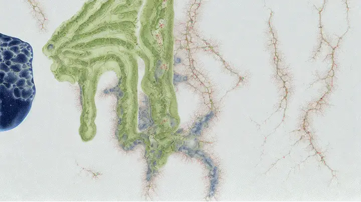
Inside my eyes
Sometimes, my thoughts fly around
inside my mind like a sand storm.
So I sit and shut my eyes, which is when
those enormous elephants mysteriously appear-
They come as a tribe, slowly walk across my mind.
I watch each elephant, each with a different color
of skin, coarse and wrinkly. These colorful elephants are
here for a moment like a rainbow after hard rain.
Their large feet are pressing until
my ground is solid and strong.
When I open my eyes, they are gone.
They always come to me in the midst of my sand storm.
Elephants have incredible memories.
They never forget where they have been.
Next time, I will walk
with my elephants.
Yuko Taniguchi